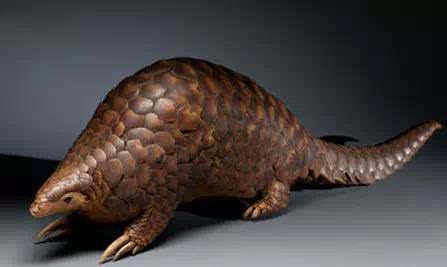

穿山甲头体长42-92厘米，尾长28-35厘米，体重2-7千克；吻细长。脑颅大，呈圆锥形。具有一小眼睛，形体狭长，全身有鳞甲，四肢粗短，尾扁平而长，背面略隆起。不同个体体重和身长差异极大。头呈圆锥状，眼小，吻尖。舌长，无齿。耳不发达。足具5趾，并有强爪；前足爪长，尤以中间第3爪特长，后足爪较短小。全身鳞甲如瓦状。鳞片与体轴平行，共15-18列自额顶部至背、四肢外侧、尾背腹面都有。尾上另有纵向鳞片910 片。鳞甲从背脊中央向两侧排列，呈纵列状。鳞片呈棕色，腹部的鳞片略软，呈灰白色，老年兽的鳞片边缘橙褐或灰褐色，幼兽尚未角化的鳞片呈黄色。鳞有三种形状：背鳞成阔的菱形，鳞基有纵纹，边缘光滑。纵纹条数不一，随鳞片大小而定。腹侧、前肢近腹部内侧和后肢鳞片成盾状，中央有龙骨状突起，鳞基也有纵纹。尾侧鳞成折合状。鳞片之间杂有硬毛。两颊、眼、耳以及颈腹部、四肢外侧、尾基都生有长的白色和棕黄色稀疏的硬毛。绒毛极少。成体两相邻鳞片基部毛相合，似成束状。雌体有乳头1对。和同属中的其他物种的差别是耳朵露在外面。 [3-4] 穿山甲是特化物种、视觉基本退化、尤以嗅觉灵敏。 穿山甲的肝脏不大，肝解毒功能弱，免疫系统弱，属于单室胃，胃中披着角质膜，胃腺部的黏膜处密布许多呈"S"型的皱襞，借吞食时吞进胃中的小砂石将食物磨碎。穿山甲肠管表面平滑，小肠长。
栖息于丘陵、山麓、平原的树林潮湿地带。中华穿山甲生活于各种各样的栖息地，包括热带森林、针叶林、常绿阔叶林、竹林、草原和农田。
喜炎热，能爬树。能在泥土中挖深2-4米、径20-30 厘米的洞。末端的巢径约2米。以长舌舐食白蚁、蚁、蜜蜂或其他昆虫。猛兽、猛禽为天敌，偶尔遭家犬袭击。 中华穿山甲过着孤独的生活。虽然它们是高度陆地动物，但它们也完全有能力攀爬树木，还有很好的游泳能力。穿山甲经常缓地慢移动四肢，用自己的指关节，其前爪卷曲在下面，产生一些非常独特的足迹。偶尔，它们可能会抬起后腿，身体更加直立，前肢保持在空中，这也是攻击白蚁巢穴时所采取的姿势。 穿山甲长长的爪子挖掘出一个白天睡觉的洞穴，在傍晚则四处去寻找食物。中国穿山甲视力不佳，但不依赖于视觉，而是依靠气味来寻找猎物。它们利用其强大的前爪打破白蚁或蚂蚁巢，然后用它长而粘的舌头将昆虫舀进嘴里。在进食时，穿山甲可以闭合其鼻孔和耳朵，以防止叮咬昆虫蜂拥而生，而厚厚的眼睑可以遮挡眼睛。因为它们缺乏牙齿，所以它们的膳食是在肌肉胃中被磨碎。
原产地：不丹、中国、印度、老挝人民民主共和国、缅甸、尼泊尔、泰国和越南。
穿山甲在亚洲被广泛猎杀，以作为食物及传统药物使用。该物种在其原生栖地均大幅减少，中华穿山甲自1990年起列入濒危野生动植物种国际贸易公约附录二中，表示任何从野外捕猎的商业用途均被禁止。在多个不同国家及地区均禁止出口及贸易，包括孟加拉、中国、印度、老挝、缅甸、尼泊尔、泰国及越南等。在中国属于国家二级保护动物，禁止捕杀和食用，非法捕杀、走私或贩卖，可被判监5年以上有期徒刑，案情严重最高可判处无期徒刑。 该物种列入《华盛顿公约》附录二，2000年为主要用于商业目的的野生捕捞标本建立了零出口配额（CoP11）。它在所有分布的国家均立法为受保护的物种（不丹除外）。 在孟加拉国，该物种在2012年被列入野生动物保护和安全法案的保护。 在中国穿山甲被列入国家野生动物保护法”II类保护物种（1989年）。它还列入“实施保护陆生野生动物条例”（1992年）和“濒危野生动物和植物濒危物种进出口管理条例”（2006年）。在2000年得到进一步保护，这两项司法解释确定了专门惩罚涉及穿山甲贩卖罪行的标准。同样，中国国家机构在2007年发布的通知加强了对传统药物包括穿山甲物种的监管，意味着穿山甲的狩猎许可证将不再被签发，现有的穿山甲称重入库，库存将被验证、认证，库存货物受试者仅通过医院等指定网点进行零售业务。 在香港特别行政区，该物种受到1976年“野生动物保护条例”（1980年修订，1996年）和“2006年动物和植物濒危物种保护”的保护。 在台湾，所有穿山甲在1990年8月起，根据1989年“野生动物保护法”（1994年修订）受到保护。 在印度，这种物种被完全保护，列入“1972年野生动物保护法”（2003年，2006年修订）附表一。 在泰国，所有穿山甲根据1992年野生动物保留和保护法B.E.分类为保护野生动物。 2535。 在尼泊尔，该物种在“国家公园和野生动物保护法”（1973年，1993年修订）附表一中被列为保护动物。 在老挝，穿山甲被列入老挝人民民主共和国“野生动物和水生法”（2007年）的禁止类别，作为在社会经济、环境、教育和科学研究发展中特别重要的一种罕见的，近乎灭绝的，高价值的物种。 在缅甸，该物种被列为“保护野生动物和野生植物和保护自然地区法”下的完全受保护的动物（1994年）。 在越南，该物种被列为在“关于濒危，珍贵和稀有野生动植物物种管理”的第32号法令第IIB组中受法律保护（2006年）。然而，该法第9节允许从非法贸易中缉获的檀香山合法销售回贸易。缺乏对没收的pangolin的适当解决方案仍然是越南执法机构的一个主要问题。